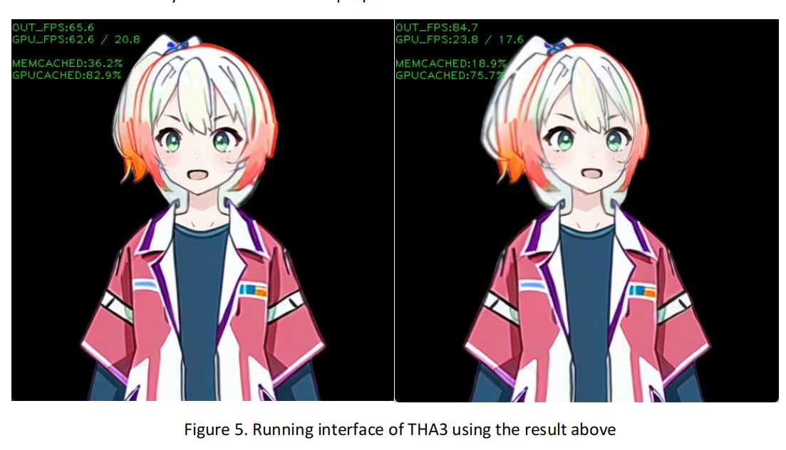

Workshops, open studios, student activity, and maker moments.
- Photo sets
- Quick reels
- Recap posts
I can stand in a makerspace, understand what someone is building, ask the useful question, capture the moment, and turn it into posts, reels, newsletters, project cards, and archive material.
Workshops, open studios, student activity, and maker moments.
Translate technical prototypes into accessible public stories.
Platform-aware edits for posts, stories, reels, and newsletters.
Keep media organized so future content is easy to reuse.
This site is structured like an editorial board, not a game portfolio. The point is content output: what can be captured, posted, reused, and explained.
10-15 photos, one short reel, one caption, and three quote/detail selects.
Interview a student builder and turn the project into a short article plus social cards.
Simple photo/video guide for a tool, machine, AI workflow, or prototyping method.
Organized media folders with thumbnails, hero selects, raw files, and reusable captions.
The Co-Lab role benefits from someone who can capture content and understand prototypes. This section balances both.

Live event documentation, people coordination, timing, and reliable campus-facing delivery.
Open case study
An AI assistant prototype that gives me first-hand experience documenting emerging technology.
Open case study
A VR library experience that shows how I explain interactive prototypes and spatial tools.
Open case study
A creative AI workflow with visuals, constraints, and documentation value.
Open case study
Strong still-image proof for event, workshop, and people-centered content.
Open case study
Example of turning research material into accessible public-facing media.
Open case studyBecause I build AI, VR, game, and software prototypes, I can ask makers better questions and avoid generic captions.
I can adapt tone and visual structure to Co-Lab while keeping the content energetic and student-friendly.
For Co-Lab, use 20-24 curated convention/cosplay images across 10-12 subjects. The goal is to prove event people skills, visual variety, and expressive subject direction without making the whole site only about cosplay.
This portfolio makes the argument that I am both a content creator and a maker-literate storyteller.
Email: jasonwang792@gmail.com